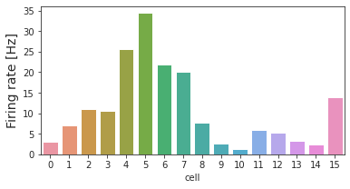

Oct 7th, 2022 (Linear: STA – draft)#
Motivation: Characterize STA for all cells.
Show code cell source
# HIDE CODE
import os
import sys
from copy import deepcopy as dc
from os.path import join as pjoin
from IPython.display import display, IFrame, HTML
# tmp & extras dir
git_dir = pjoin(os.environ['HOME'], 'Dropbox/git')
extras_dir = pjoin(git_dir, 'jb-MTMST/_extras')
fig_base_dir = pjoin(git_dir, 'jb-MTMST/figs')
tmp_dir = pjoin(git_dir, 'jb-MTMST/tmp')
# GitHub
sys.path.insert(0, pjoin(git_dir, '_MTMST'))
from model.vae import ConfigVAE, VAE
from utils.plotting import *
# warnings, tqdm, & style
warnings.filterwarnings('ignore', category=DeprecationWarning)
from tqdm.notebook import tqdm
%matplotlib inline
set_style()
Load data#
base_dir = '/home/hadi/Documents/MTMST'
load_dir = pjoin(base_dir, 'MTLFP', 'xtracted_python')
file = pjoin(load_dir, 'MTLFP_tres25.h5')
file = h5py.File(file, 'r')
name = 'clu221'
group = file[name]
list(group)
['badspks',
'cellindex',
'field',
'fixlost',
'hyperflow',
'latency',
'lfp',
'nx',
'ny',
'partition',
'repeats',
'rf_loc',
'spatres',
'spks',
'spkst',
'stim1',
'stim2']
stim = np.array(group['stim1'], dtype=float)
spks = np.array(group['spks'], dtype=float)
good = ~np.array(group['badspks'])
print(f"good: {100 * good.sum() / len(good):0.1f} %")
good = np.where(good)[0]
good: 78.6 %
from utils.process import setup_supervised_data
from analysis.sta import compute_sta
from analysis.hyperflow import *
src, tgt = setup_supervised_data(24, good, stim, spks)
src.shape, tgt.shape
((33951, 24, 15, 15, 2), (33951, 16))
sta = np.einsum('ij, jklmn -> iklmn', tgt.T, src)
sta /= np.max(np.abs(sta))
sta.shape
(16, 24, 15, 15, 2)
fig = plt.figure(figsize=(2, 2))
ax = fig.add_axes([0, 0, 1, 1], projection='polar')
cb = matplotlib.colorbar.ColorbarBase(
ax=ax,
cmap=matplotlib.cm.get_cmap('hsv', 2048),
norm=matplotlib.colors.Normalize(0, 2 * np.pi),
orientation='horizontal',
)
ax.get_children()[1].set_lw(0)
ax.axis('off')
plt.show()
sta = VelField(sta, name)
_ = sta.show()

sta.show_full()

[<Figure size 2160x432 with 120 Axes>,
<Figure size 2160x432 with 120 Axes>,
<Figure size 2160x432 with 120 Axes>,
<Figure size 2160x432 with 120 Axes>,
<Figure size 2160x432 with 120 Axes>,
<Figure size 2160x432 with 120 Axes>,
<Figure size 2160x432 with 120 Axes>,
<Figure size 2160x432 with 120 Axes>,
<Figure size 2160x432 with 120 Axes>,
<Figure size 2160x432 with 120 Axes>,
<Figure size 2160x432 with 120 Axes>,
<Figure size 2160x432 with 120 Axes>,
<Figure size 2160x432 with 120 Axes>,
<Figure size 2160x432 with 120 Axes>,
<Figure size 2160x432 with 120 Axes>,
<Figure size 2160x432 with 120 Axes>]
s = sta.s / sta.s.sum(1, keepdims=True)
s.shape
(16, 24)
plt.plot(s.T);
np.round(s[:, 0] * 100, 1)
array([67.9, 79.1, 75.8, 75.6, 71.1, 67.3, 65. , 62.1, 56.3, 55.4, 48.4,
57.8, 55.7, 47.2, 50.2, 59.8])
sta = compute_sta(24, good, stim, spks, True)
a = sta[4]
norm = np.linalg.norm(a, ord=2, axis=-1)
maxlag = np.argmax(norm.sum(-1).sum(-1))
maxlag
100%|██████████| 33951/33951 [00:11<00:00, 2872.27it/s]
20
plt.plot(norm.sum(-1).sum(-1))
[<matplotlib.lines.Line2D at 0x7f6c164fe130>]
sta = compute_sta(100, good, stim, spks, True)
a = sta[4]
norm = np.linalg.norm(a, ord=2, axis=-1)
maxlag = np.argmax(norm.sum(-1).sum(-1))
maxlag
100%|██████████| 33904/33904 [01:06<00:00, 512.73it/s]
96
plt.plot(norm.sum(-1).sum(-1))
[<matplotlib.lines.Line2D at 0x7f6c96ae46a0>]
hf = HyperFlow(
opticflow=np.array(group['hyperflow'])[:, 2:],
center=np.array(group['hyperflow'])[:, :2],
size=32,
sres=2,
radius=8,
)
stim = hf.compute_hyperflow()
fig, axes = create_figure(1, 2)
axes[0].imshow(stim[2001, ..., 0])
axes[1].imshow(stim[2001, ..., 1])
plt.show()
hf.setattrs(sres=1)
stim = hf.compute_hyperflow()
fig, axes = create_figure(1, 2)
axes[0].imshow(stim[2001, ..., 0])
axes[1].imshow(stim[2001, ..., 1])
plt.show()
sta = compute_sta(24, good, stim, spks, True)
100%|██████████| 33951/33951 [01:18<00:00, 429.86it/s]
sta = VelField(sta, 'sres=1')
_ = sta.show()
_ = sta.show_full()


hf.setattrs(radius=3)
stim = hf.compute_hyperflow()
fig, axes = create_figure(1, 2)
axes[0].imshow(stim[2001, ..., 0])
axes[1].imshow(stim[2001, ..., 1])
plt.show()
hf.setattrs(radius=16)
stim = hf.compute_hyperflow()
fig, axes = create_figure(1, 2)
axes[0].imshow(stim[2001, ..., 0])
axes[1].imshow(stim[2001, ..., 1])
plt.show()
fig, axes = create_figure(3, 24, (30, 3.6), 'all', 'all')
vminmax = np.max(np.abs(a))
kws = {
'cmap': 'bwr',
'vmax': vminmax,
'vmin': -vminmax,
}
for t in range(24):
time = (t - 24) * 25
axes[0, t].set_title(f't = {t}\n{time}ms', fontsize=8)
axes[0, t].imshow(a[t][..., 0], **kws)
axes[1, t].imshow(a[t][..., 1], **kws)
axes[2, t].imshow(norm[t], vmin=np.min(norm), vmax=np.max(norm))
remove_ticks(axes, False)
plt.show()
hf.setattrs(size=64, radius=16)
stim = hf.compute_hyperflow()
fig, axes = create_figure(1, 2)
axes[0].imshow(stim[2001, ..., 0])
axes[1].imshow(stim[2001, ..., 1])
plt.show()
sta = compute_sta(24, good, stim, spks, True)
100%|██████████| 33951/33951 [11:29<00:00, 49.23it/s]
sta = VelField(sta, 'size=64')
_ = sta.show()
_ = sta.show_full()


hf.setattrs(size=128, radius=32)
stim = hf.compute_hyperflow()
fig, axes = create_figure(1, 2)
axes[0].imshow(stim[2001, ..., 0])
axes[1].imshow(stim[2001, ..., 1])
plt.show()

stim = get_vel_field(
opticflow=hyperflow[:, 2:],
center=hyperflow[:, :2],
size=128,
sres=1,
radius=28,
).reshape((-1, 128, 128, 2))
stim.shape
(43200, 128, 128, 2)
fig, axes = create_figure(1, 2)
axes[0].imshow(stim[2001, ..., 0])
axes[1].imshow(stim[2001, ..., 1])
plt.show()
Firing rate plot#
df = []
for i in range(spks.shape[1]):
num = spks[:, i].sum(0)
df.append({
'cell': [i],
'num_spk': [num],
'fr': [num / (len(spks) * 25e-3)],
})
df = pd.DataFrame(merge_dicts(df))
fig, ax = create_figure(1, 1, (6, 3))
sns.barplot(data=df, x='cell', y='fr', ax=ax)
ax.set_ylabel('Firing rate [Hz]', fontsize=14);

Scratch#
group['repeats']['spksR'].shape
(12040, 16)
12040 * 25e-3
301.0
group['repeats']['psth_raw_all'].shape
(16, 38, 201)
x = np.array(group['repeats']['hyperflowR'])
x.shape
(12040, 8)
plt.plot(x[:, 5])
[<matplotlib.lines.Line2D at 0x7f404db482b0>]
x = np.array(group['hyperflow'])
x.shape
(43200, 8)
plt.plot(x[:, 5])
[<matplotlib.lines.Line2D at 0x7f404db082b0>]
ptsh = np.array(group['repeats']['psth_raw_all'])
ptsh.shape
(16, 38, 201)
spks_r = np.array(group['repeats']['spksR'])
spks_r.shape
(12040, 16)
stim_r = np.array(group['repeats']['stimR'])
stim_r.shape
(12040, 15, 15, 2)
d = sp_dist.pdist(stim_r.reshape(len(stim_r), -1))
d = sp_dist.squareform(d)
d.shape
(12040, 12040)
plt.imshow(d)
<matplotlib.image.AxesImage at 0x7f404cf81670>
plt.plot(d[26])
[<matplotlib.lines.Line2D at 0x7f404b53f6a0>]
(spks_r == -1).sum()
0
tstart = np.array(group['repeats']['tind_start_all'])[0]
tstart.shape
(38,)
# plt.imshow(tstart)
<matplotlib.image.AxesImage at 0x7f404d3be4f0>
tstart
array([ 26, 226, 427, 628, 828, 1029, 1229, 1430, 2032,
2233, 2433, 2634, 2834, 3637, 4239, 4440, 5242, 5443,
5844, 6045, 6245, 6446, 6646, 6847, 7048, 7248, 7650,
8251, 8653, 9255, 10258, 10458, 10659, 10860, 11060, 11261,
11462, 11662])
plt.imshow(stim_r[26, ..., 0])
<matplotlib.image.AxesImage at 0x7f4048559670>
plt.imshow(stim_r[427, ..., 0])
<matplotlib.image.AxesImage at 0x7f40484be1c0>
plt.plot(stim_r[26].ravel())
plt.plot(stim_r[26].ravel() - stim_r[226].ravel())
[<matplotlib.lines.Line2D at 0x7f4048590ac0>]